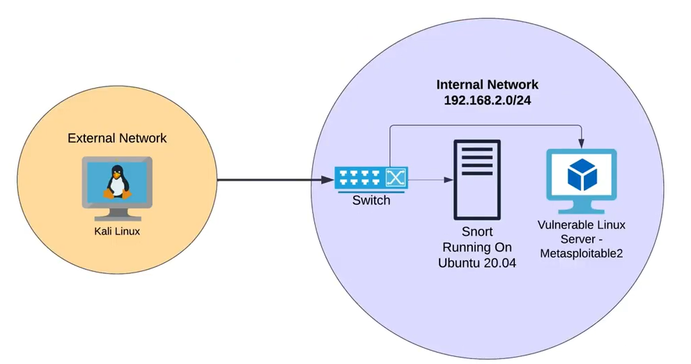
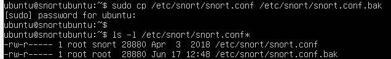
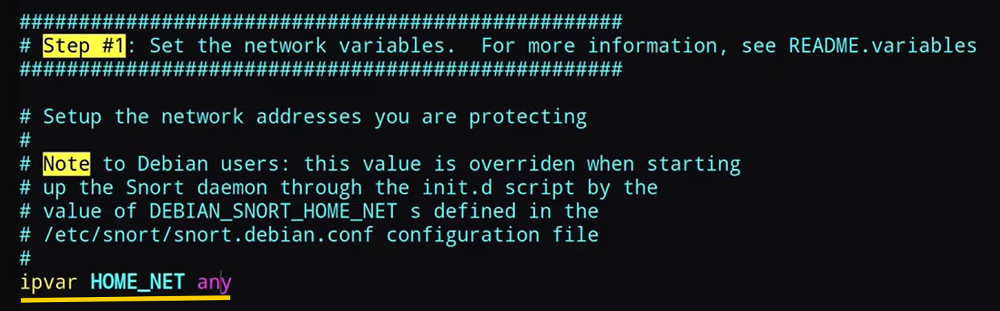
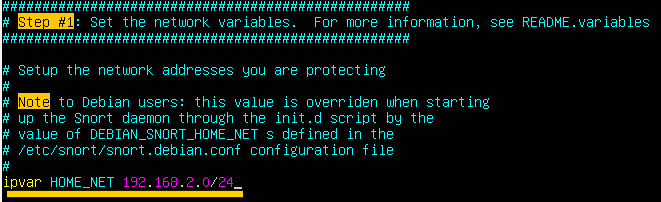
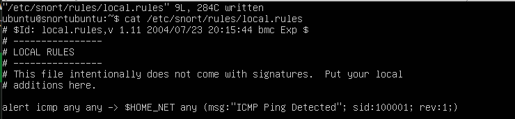
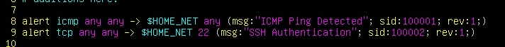
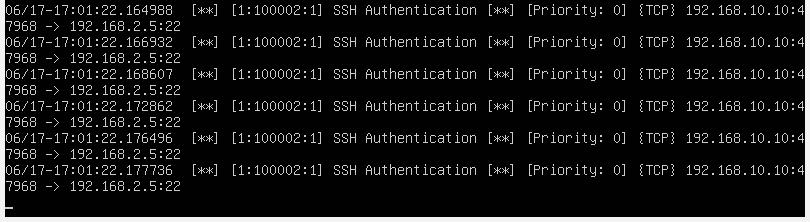

Intrusion Detection with Snort
In this exercise I built a small virtualized network to practice configuring and running Snort as an IDS sensor, monitoring traffic between an attacker machine and a vulnerable target. The objective wasn't to focus on the exploitation side, but on the detection side — writing and applying rules to recognize attack traffic as it happens, and understanding where a sensor actually needs to sit in a network to see that traffic at all. This is essentially the kind of task you would encounter working on a blue team: not running the attacks, but watching for them.
Objective
Build a small virtualized lab to practice configuring a Snort IDS sensor that monitors traffic between an attacker machine (Kali Linux) and a vulnerable target (Metasploitable2). The goal was to go beyond just installing Snort — to actually understand *where* a sensor needs to sit in a network to see what it's supposed to see, and to practice both writing custom rules and applying community-maintained ones against real (if deliberately vulnerable) exploit traffic.
This is the first lab I've built with three VMs — I'd previously only worked with two-VM setups, so getting inter-VM routing right was new territory.
Environment
Three VirtualBox VMs:
- Kali Linux - attacker
- Ubuntu Server 20.04 - Snort IDS sensor
- Metasploitable2 - vulnerable target

Setting Up Snort
The rules folder contains Snort's predetermined rules — a large, continuously updated set covering most known attacks, so you don't have to write detection logic for every threat yourself. You can also write your own rules, typically saved to a local file. In this lab, I disabled the predetermined ruleset to practice writing my own rules from scratch, before later reintroducing rules from Snort's official community set.
snort.conf is the main configuration file and effectively the core of how Snort behaves. As a beginner, I made a backup copy before editing anything — good practice for any config file you're not yet fully comfortable with.

The first thing I edited was the HOME_NET variable, which defines the subnet Snort should treat as "home" and monitor. By default it's set to any, meaning no real subnet is defined. I set it to 192.168.2.0/24, matching the subnet I'd configured on my machines.



(Small side note: this lab was also my first real hands-on use of vim — editing, quitting, line numbers, and modifying larger blocks of text.)
The Problem: Pings Not Detected
With HOME_NET set, any ICMP (ping) traffic in the network should be visible to Snort. Testing this, though, revealed something wasn't working as expected: pings from Kali to the Ubuntu/Snort machine were detected correctly, but pings from Kali (192.168.2.10) to Metasploitable2 (192.168.2.5) were not detected at all — despite promiscuous mode being enabled on the Snort interface.
Root Cause
This turned out to be a network topology issue, not a Snort configuration problem. My first attempt put all three VMs on a single flat VirtualBox Internal Network. I'd assumed promiscuous mode would let Snort passively see *all* traffic on that segment, including traffic between Kali and Metasploitable2 that wasn't addressed to it.
That assumption was wrong. VirtualBox's Internal Network behaves like a real switch: it only delivers traffic to the port it's actually addressed to, rather than broadcasting everything to every connected interface. So even with promiscuous mode on, Snort's interface simply never received a copy of traffic travelling directly between two *other* machines on the same flat segment — there was nothing arriving at its NIC to inspect in the first place.
This also matched my original network diagram more closely than I'd initially realized: it places Snort *between* the switch and the vulnerable server — an inline position, where traffic to the target has to physically pass through the Snort host, not just sit passively nearby on the same switch.
Fix: redesigning as a two-segment bridge
To force Kali-Metasploitable2 traffic to actually pass through the Snort sensor, I restructured the network into two separate segments, with Ubuntu acting as a bridge/router between them:
- 192.168.10.0/24 - Kali-facing segment (Ubuntu's first interface, enp0s3)
- 192.168.2.0/24 - Metasploitable2-facing segment (Ubuntu's second interface, enp0s8)
Key changes:
- Added a second network adapter to the Ubuntu VM, each attached to a different VirtualBox Internal Network
- Enabled IP forwarding on Ubuntu (net.ipv4.ip_forward=1 in sysctl.conf), so the kernel would actually route packets between interfaces instead of only accepting traffic addressed to itself
- Configured static IPs via netplan on both Ubuntu interfaces, one per subnet
- Set Metasploitable2's default gateway to Ubuntu's 192.168.2.20 interface, and Kali's default gateway to Ubuntu's 192.168.10.20 interface, so cross-subnet traffic would route through Ubuntu
With this topology, a ping from Kali to Metasploitable2 now has to traverse both of Ubuntu's interfaces to reach its destination — exactly the path Snort needed to observe. After this change, Snort successfully detected ICMP traffic between Kali and Metasploitable2.
Reflection: promiscuous mode and topology
Going in, I assumed promiscuous mode meant traffic was effectively broadcast to everyone on the network — that any device in promiscuous mode would passively catch all packets, regardless of where they were headed. What I've learned is that promiscuous mode only changes what a node does with traffic that actually arrives at its interface — it stops discarding packets not addressed to it and inspects them instead. It doesn't change what traffic arrives there in the first place. If the switch never forwards a packet to that port, promiscuous mode has nothing to work with — the traffic simply never "sees" the sensor. This means the network topology itself has to force traffic past the point you want to monitor; promiscuous mode alone can't compensate for a badly placed sensor. Next time, I'd design the topology first with this in mind — deciding where traffic must physically pass — rather than placing the sensor and hoping it catches everything nearby.
Reflection: IDS vs IPS placement
If this had been an IPS lab instead of IDS, the flat network setup would not have worked at all. To prevent unwanted traffic, the system needs to sit directly between the source and destination — it has to guard the gate, not just watch it. That's essentially what a firewall does. An IDS, by contrast, is more like a firewall's logs without the enforcement: it notices and records suspicious traffic but has no ability to act on it. This is exactly why the original diagram placed Snort inline, between the switch and the server, rather than just alongside the other machines on the same segment — even for detection, it needed to sit on the actual path traffic takes, not just nearby it. For an IPS, that inline placement wouldn't just be the right design choice — it would be a strict requirement, since nothing can be blocked if it doesn't already pass through the enforcement point.
Writing a Custom Rule
With the topology fixed, I wrote a rule to alert on any established SSH connection: any TCP traffic from an outside IP/port into HOME_NET on port 22. Rule SIDs must be unique, so this one was set to 100002.

Snort correctly alerted on SSH authentication activity in the lab:

A useful tool for building rules more visually: Snorpy